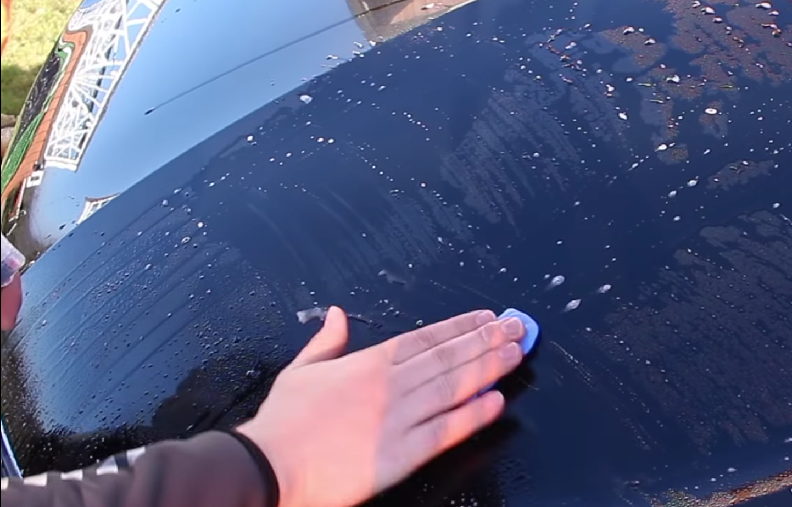
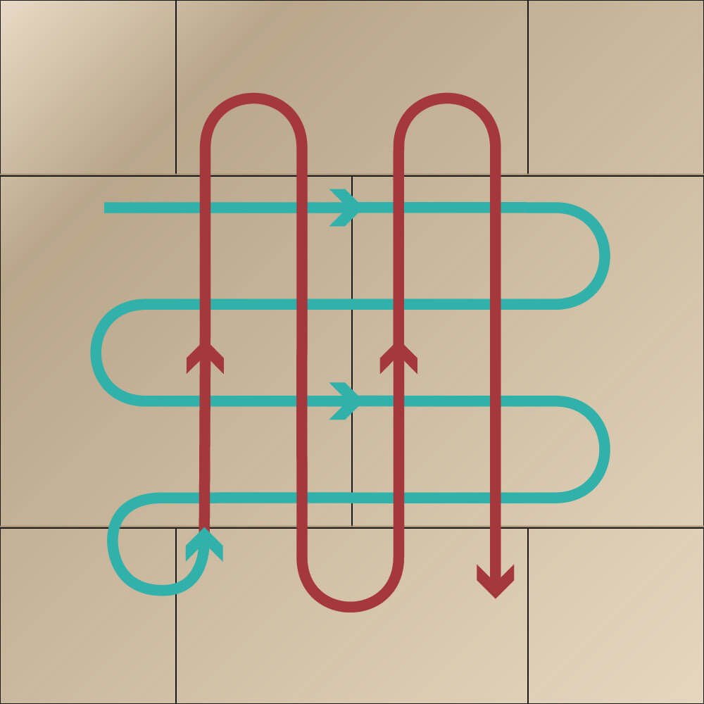
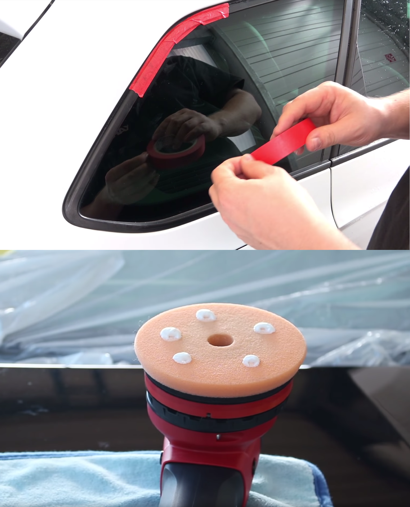

Polieren
Nach der Autowäsche sollte das Fahrzeug nun blitzblank sauber sein.
Lack Kneten
Um hartnäckigere Verschmutzungen, wie Flugrost, angetrocknete Teerspritzer und Baumharze, Industrieablagerungen etc. zu entfernen, muss der Lack geknetet werden. Hierfür braucht man zum einen eine Reinigungsknete und eine Clay Lube (Wasser-Shampoo-Gemisch), was z.B. der Hersteller Petzoldt's anbietet. Hierbei sollte man darauf achten, dass die Knete und der Lack immer genug mit der Clay Lube benetzt sind. Die Knete sollte niemals trocken auf dem Lack zum Einsatz kommen. Wenn man mit der Reinigungsknete und der Clay Lube das komplette Fahrzeug geknetet hat, ist der Lack rein und somit perfekt für die Politur vorbereitet. Wären noch Schmutzpartikel auf dem Lack, so würde man diese beim Polieren in den Lack einreiben, deshalb ist dieser Schritt wichtig.
Lack polieren
Je nach Lackzustand (Anzahl und Tiefe der Kratzer) gibt es hier viele verschiedene Vorgehensweisen. Zunächst braucht man eine Poliermaschine, am besten eine sogenannte Exzenter-Poliermaschine. Diese ist für Anfänger besser geeignet, da es weniger Hitzeentwicklung gibt und man somit nicht so leicht etwas am Lack beschädigen kann. Die andere Variante ist die Rotations-Poliermaschine, diese hat eine größere Kraft und somit eine höhere Hitzeentwicklung, wodurch man teilweise auch schneller ans Ziel kommen kann. Des weiteren gibt es viele verschiedene Polituren, von minimalem Abrieb bis zu starker Abtrageleistung. Das gilt genauso für die Polierpads, je nach Härte und Struktur des Pads kann man eine hohe Abtrageleistung oder eine geringe Abtrageleistung erzielen. Somit kann man individuell je nach Lackzustand selbst entscheiden, welche Kombination man wählt. Hierbei ist jedoch zu beachten, sollte man eine starke Politur mit einem harten Pad nutzen, so entstehen durch die große Kraft Hologramme (unschöne Spiegelung der Lacks im Licht) auf dem Lack. Deshalb sollte man später noch eine weitere Runde mit einem weichen Pad und einer Finish-Politur (kleine Abtrageleistung) über den Lack polieren, um ein optimales Glanzergebnis zu erhalten.
Vorsorge
Im Optimalfall werden vor der Politur noch alle Gummileisten etc. mit einem Klebeband abgeklebt. Somit ist ausgeschlossen, dass man ausversehen auf den Gummis poliert, was weiße Flecken verursacht. Anschließend kann man endlich sorgenfrei polieren. Hierfür setzt man sich etwa 5 erbsengroße Politurkleckse auf das Pad und verteilt die Politur auf der geringsten Stufe der Poliermaschine auf der Fläche. Poliert wird dann im sogenannten Kreuzstrich-Verfahren (siehe Bild). Hierbei fährt man mit der Poliermaschine  in leicht überlappenden Bahnen über den Lack. Die Bahnen fährt man mit ein paar cm/sek ab, also nicht zu schnell. Allerdings sollte man auch nicht ewig auf einer Stelle verharren, da sonst die Wärmeentwicklung zu stark wird und den Lack schädigen kann. Hat man nun das gewünschte Glanzergebnis auf dem Fahrzeuglack erreicht, so nimmt man die Politurüberreste mit einem Mikrofastertuch und einem Kontrollreiniger (Isopropanol-Gemisch) ab. Bei diesem Schritt wird der Lack ebenso durch das Isopropanol komplett entfettet und somit perfekt für die Lackversiegelung vorbereitet.
